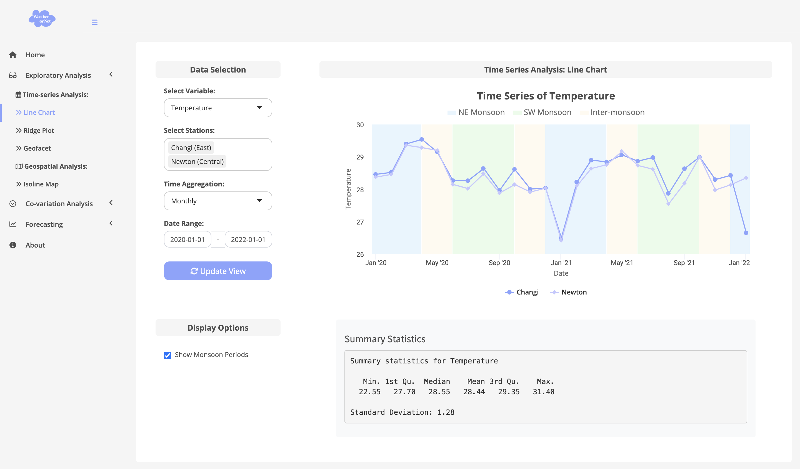

pacman::p_load(dplyr,lubridate,zoo,ggplot2,ggridges,geofacet)Take-home_Ex3
Project Description
This module aims to show the weather trends (temperature, rainfall, wind speed) of various weather stations in Singapore on different time scales (daily, weekly, monthly) through an interactive time series line chart. The user can select the data of interest based on the station, time range and variables, and optionally select whether the monsoon period is bright or not to assist the observation of seasonal changes.
Data Description and Preparation
The data set used for this project, station_data.rds, contains 15 variables recorded daily from 1 January 2019 by 10 automatic weather stations in Singapore, including:
10 automatic weather stations:
Changi Marina Barrage
Ang Mo Kio
Clementi
Jurong (West)
Paya Lebar
Newton
Pasir
Panjang
Tai Seng
Admiralty
Dataset columns:
Temperature: mean_temperature_c, maximum_temperature_c, minimum_temperature_c
Rainfall:daily_rainfall_total_mm,the highest_30_min_rainfall_mm, the highest_60_min_rainfall_mm, the highest_120_min_rainfall_mm
Wind speed: mean_wind_speed_km_h, max_wind_speed_km_h
Time information: date
station name: station
Data import and initial exploration
- Load the necessary R packages
- Import the dataset
dataset <- readRDS("/Users/geloliu/Gelo-608/ISSS608/Take home Ex/Take-home_Ex3/station_data.rds") View the structure of the data
str(dataset)tibble [22,230 × 15] (S3: tbl_df/tbl/data.frame) $ station : Factor w/ 10 levels "Admiralty","Ang Mo Kio",..: 9 9 9 9 9 9 9 9 9 9 ... $ year : num [1:22230] 2019 2019 2019 2019 2019 ... $ month : num [1:22230] 1 1 1 1 1 1 1 1 1 1 ... $ day : num [1:22230] 1 2 3 4 5 6 7 8 9 10 ... $ daily_rainfall_total_mm : num [1:22230] 0 0 0 0 6.2 0 0 14.9 0 0 ... $ highest_30_min_rainfall_mm : num [1:22230] 0 0 0 0 NA 0 0 NA 0 0 ... $ highest_60_min_rainfall_mm : num [1:22230] 0 0 0 0 NA 0 0 NA 0 0 ... $ highest_120_min_rainfall_mm: num [1:22230] 0 0 0 0 NA 0 0 NA 0 0 ... $ mean_temperature_c : num [1:22230] 30.1 29.8 29.9 30.2 30 ... $ maximum_temperature_c : num [1:22230] 34.2 33.8 33.1 33.5 34 32.7 33.1 31.6 32.7 33 ... $ minimum_temperature_c : num [1:22230] 26.1 25.8 26.7 26.9 26 26.2 26 26 25.8 25.3 ... $ mean_wind_speed_km_h : num [1:22230] 11.9 13 15.8 11.2 7.2 15.8 16.6 12.6 16.9 16.6 ... $ max_wind_speed_km_h : num [1:22230] 42.5 46.4 48.2 35.3 31.3 38.9 42.5 33.5 42.5 42.5 ... $ date : Date[1:22230], format: "2019-01-01" "2019-01-02" ... $ weekday : Ord.factor w/ 7 levels "Sun"<"Mon"<"Tue"<..: 3 4 5 6 7 1 2 3 4 5 ...Preview the data
head(dataset)# A tibble: 6 × 15 station year month day daily_rainfall_total_mm highest_30_min_rainfall…¹ <fct> <dbl> <dbl> <dbl> <dbl> <dbl> 1 Paya Lebar 2019 1 1 0 0 2 Paya Lebar 2019 1 2 0 0 3 Paya Lebar 2019 1 3 0 0 4 Paya Lebar 2019 1 4 0 0 5 Paya Lebar 2019 1 5 6.2 NA 6 Paya Lebar 2019 1 6 0 0 # ℹ abbreviated name: ¹highest_30_min_rainfall_mm # ℹ 9 more variables: highest_60_min_rainfall_mm <dbl>, # highest_120_min_rainfall_mm <dbl>, mean_temperature_c <dbl>, # maximum_temperature_c <dbl>, minimum_temperature_c <dbl>, # mean_wind_speed_km_h <dbl>, max_wind_speed_km_h <dbl>, date <date>, # weekday <ord>
Overview
🔧 Components and Packages Used
This dashboard was built using the Shiny framework in R and integrates the following components:
UI Components:
selectInput,dateRangeInput,checkboxInput,actionButton,tabBox,fluidRow,boxVisualization Libraries:
highcharter,ggplot2,ggridges,geofacet,leafletData Manipulation Libraries:
dplyr,tidyr,lubridate,zoo
🧱 Data Preparation Steps
Before visualizing the data, the following cleaning and transformation steps were performed:
Missing Value Handling:
Used
coalesce()to merge alternative columns.Applied
zoo::na.approx()to perform linear interpolation and preserve time series structure.
Aggregation:
- Aggregated values to daily, weekly, and monthly formats using
lubridate::floor_date().
- Aggregated values to daily, weekly, and monthly formats using
Derived Variables:
Created a
weekdayvariable to support time grouping.Created
regionandplanning_areagroupings for geospatial visualizations.
Output Format:
- The final cleaned data was saved as
station_data.rdsand used across modules.
- The final cleaned data was saved as
Module 1: Line Chart – Weather Trends Over Time
🌟 Objective
Allows users to explore and compare weather trends across stations with optional seasonal overlays.
⚖️ Process & Implementation
User Input Controls:
Variables: Temperature, Rainfall, Wind Speed
Stations: Single or multiple stations
Time Aggregation: Daily, Weekly, Monthly
Date Range Selector
Checkbox to toggle monsoon overlay
Action button: Update View
Reactive Logic in Server:
The selected variable name is mapped to its corresponding column name (e.g., “Temperature” maps to
mean_temperature_c).The dataset is filtered based on the user-selected stations and date range.
Aggregation is applied using
floor_date()depending on whether the user selected weekly or monthly granularity.Grouped by station and date to calculate mean values.
Plotting:
Chart generated using
highcharter::hchart()for interactive plotting.Monsoon bands added using
plotBandsto differentiate NE, SW, and Inter-monsoon periods.The legend distinguishes between stations.
Summary Table:
- Statistics such as min, max, mean, SD, and quartiles are calculated and displayed for the selected station(s) and variable.
🎨 Monsoon Highlighting
Added
plotBandsin Highcharts to overlay shaded bands for:Northeast Monsoon: Dec–Mar
Southwest Monsoon: Jun–Sep
Inter-monsoons: Apr–May, Oct–Nov
Custom RGBA colors for subtle seasonal shading
📊 Screenshot Example

Module 2: Ridge Plot – Distribution by Station
🌟 Objective
This module shows the distribution and variability of weather variables across stations over time, using ridgeline plots.
⚖️ Process & Implementation
User Input Controls:
Variables: Temperature, Rainfall, Wind Speed
Multiple stations
Time Aggregation
Date Range
Action button: Update View
Reactive Server Pipeline:
Selected variable is mapped similarly to Module 1.
Dataset is filtered and aggregated using
floor_date().Interpolation is applied to missing values using
zoo::na.approx()to retain continuity.
Visualization:
ggplot2+ggridges::geom_density_ridges()is used to draw ridgeline plots.The x-axis represents the value of the selected variable, and y-axis is the station.
Each station’s distribution is shown with color-filled density curves.
Station-Level Summary:
- A textbox displays count, mean, SD, min/max, and quartiles per selected station.
📊 Screenshot Examples


Module 3: Geofacet Grid – Station-Level Trends by Region
🌟 Objective
This module uses geofacet to display time series plots across all stations using a layout that mimics Singapore’s geography.
⚖️ Process & Implementation
User Input Controls:
Two tab panels: “All Stations” and “Selected Stations”
Variables, Date Range, Aggregation Type, Station List
Action button: Update View
Server Pipeline:
Dataset is filtered by user inputs and aggregated like the other modules.
In “All Stations” mode, all 10 stations are shown; in “Selected Stations,” only selected ones are drawn.
Geofacet Plotting:
Uses
facet_geo()fromgeofacetpackage.Each station is plotted in a grid position resembling its real-world location.
The y-axis shows variable values and x-axis represents date.
📊 Screenshot Examples


This concludes the description of the three modules I implemented: Line Chart, Ridge Plot, and Geofacet. Each module is interactive, allows variable and station selection, and provides both visual and statistical output to aid user understanding of Singapore’s weather trends across time and geography.